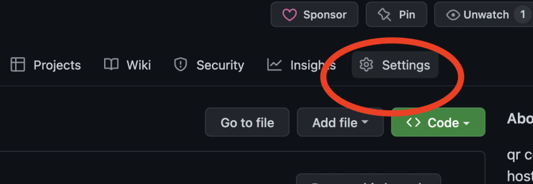

Comment héberger un site Web gratuit sur Github
GitHub Pages utilise désormais des flux de travail GitHub Action personnalisables pour créer et déployer votre code afin que les développeurs puissent contrôler leur cadre de création et leur déploiement. GitHub Pages est une option puissante pour stocker du contenu statique pour les raisons suivantes : C'est gratuit. Cela facilite la collaboration. N'importe qui peut ouvrir une pull request pour mettre à jour le site. Votre référentiel se synchronise avec toutes les modifications que vous avez apportées à votre site. Alors que les pages GitHub sont livrées avec un nom de domaine par défaut comme https://YOUR_USER_NAME.github.io/ , il prend en charge les domaines personnalisés. Il utilise des workflows GitHub Action personnalisables pour les builds et les déploiements. Apprenons à héberger des sites statiques construits avec HTML sur des pages GitHub !
Après avoir créé et stocké du code HTML dans un référentiel, accédez à l'onglet des paramètres de ce référentiel.
Cliquez sur Pages dans la barre latérale gauche

Sous build et déploiement, choisissez Actions GitHub

Ceci vous proposera quelques flux de travail basés sur le code de votre référentiel. Vous pouvez choisir HTML statique.

Cliquer sur configurer vous mènera à un flux de travail prédéfini. N'hésitez pas à consulter le YAML, à le modifier selon vos préférences et à valider le code.

Dans quelques secondes, votre action commencera à s'exécuter. Il générera une URL et déploiera votre site statique sur les pages GitHub en cas de succès.

Rendez-vous sur votre URL nommée yourusername.github.io/your_repo_name pour consulter votre site Web en direct !